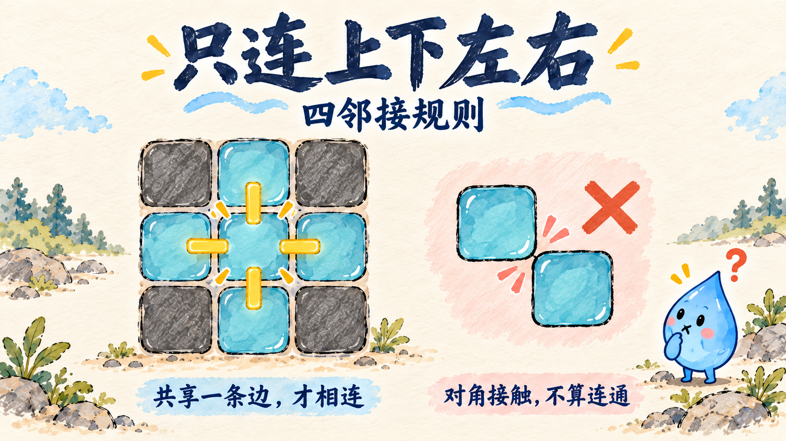
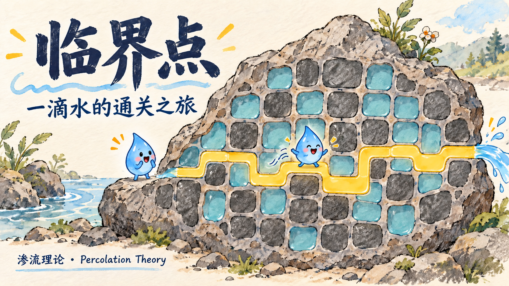
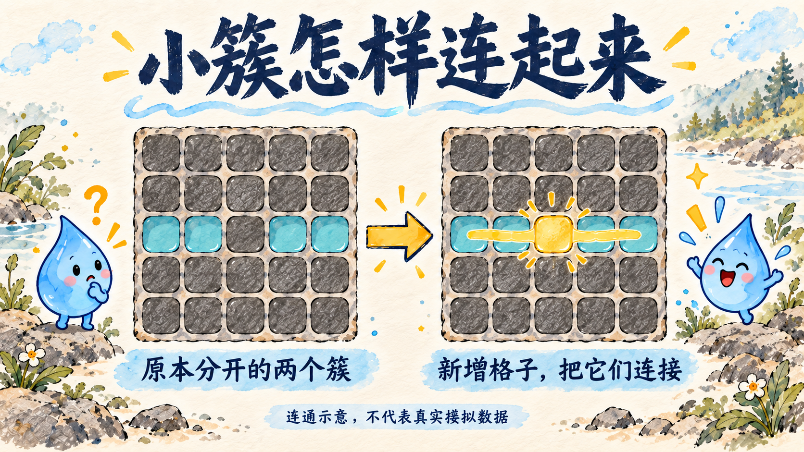
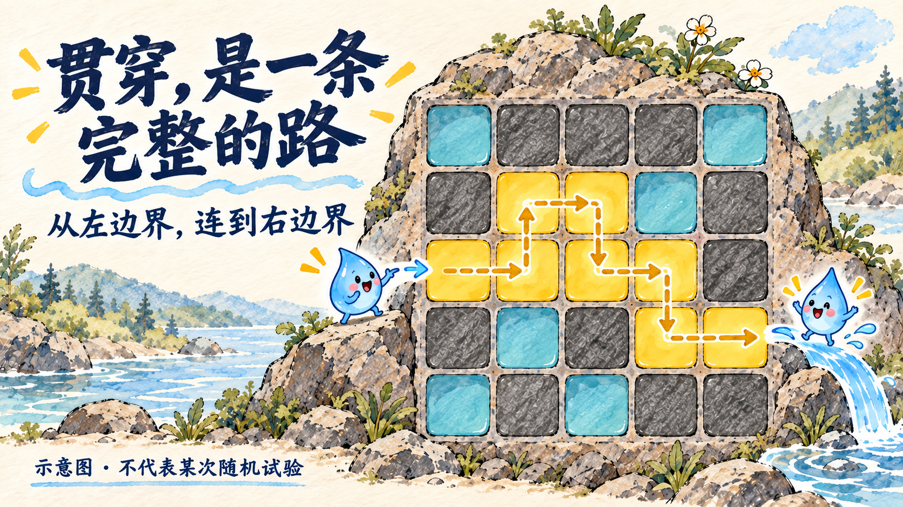
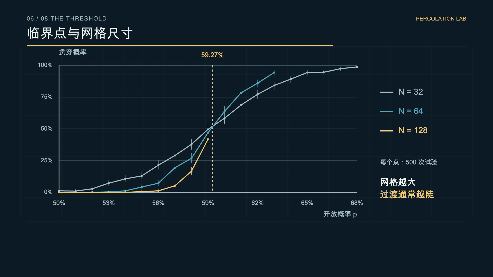

01
共享一条边，才相连
只连接上下左右。对角接触，在这里不算连通。

从零散的孔隙，到贯穿整块岩石的通路。
一支有中文解释、中英字幕和真实模拟的科普视频。
4 分 25 秒，1080p / 30fps。中文旁白与双语字幕已包含在视频中。
手绘风格的概念示意，把模型规则拆开讲清楚。这些插画不是随机试验结果。

只连接上下左右。对角接触，在这里不算连通。

局部的新增连接，可以改变更大区域的连通关系。

从左边界沿开放格子，一直走到右边界。
固定种子，独立试验。每一个统计数字，都能在仓库里的数据文件中找到。
| 开放概率 p | 网格 | 贯穿次数 / 试验数 | 贯穿率 | Wilson 95% CI |
|---|---|---|---|---|
| 58% | 128 × 128 | 187 / 1000 | 18.7% | 16.4%–21.2% |
| 60% | 128 × 128 | 700 / 1000 | 70.0% | 67.1%–72.8% |

N = 32 / 64 / 128；p = 0.50–0.68；每点 500 次试验；共 57 个点。图片直接取自成片。
渗流理论可以启发我们理解“融会贯通”，但这种学习比喻不能替代对学习机制的实证研究。水和导电颗粒在这里表示连通关系，不表示实际流速或材料电导率。